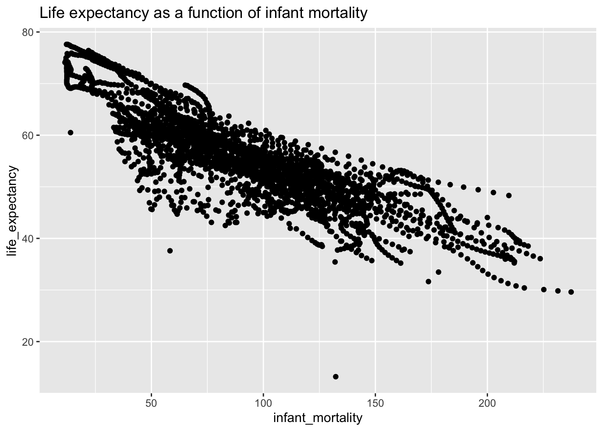
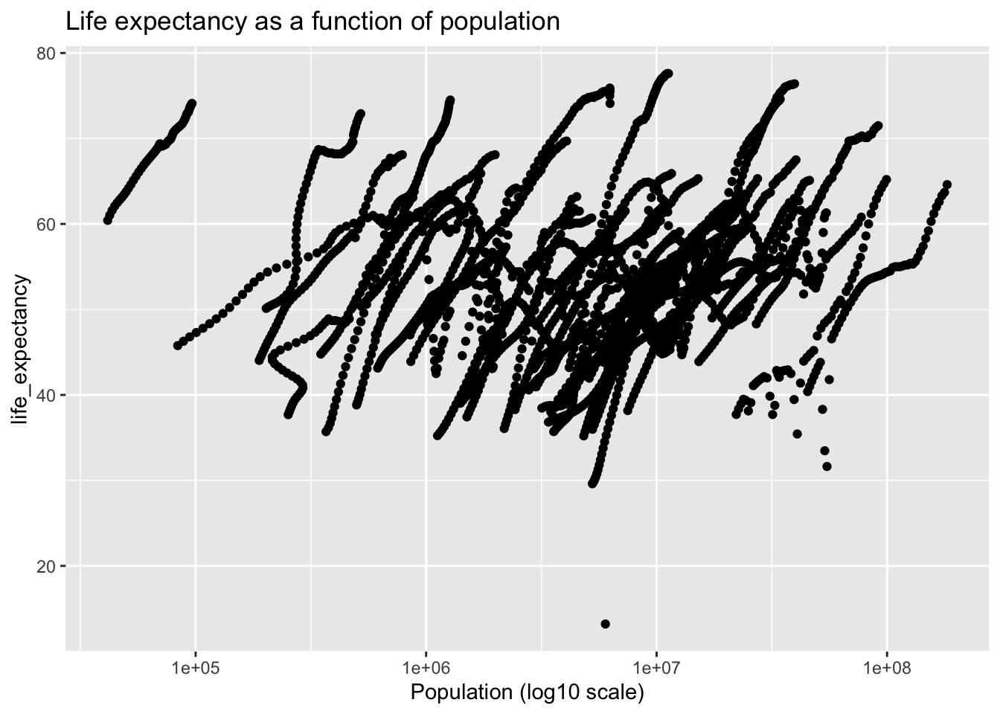
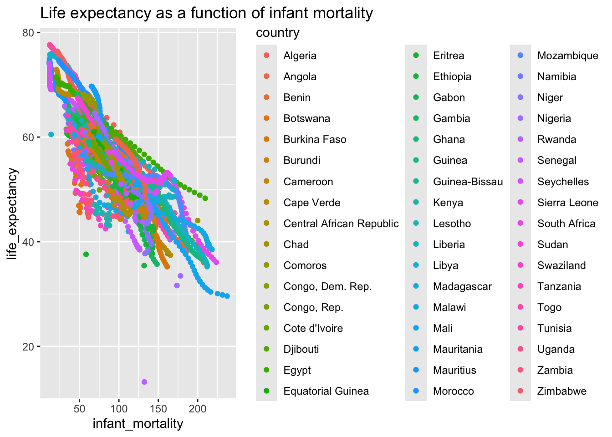
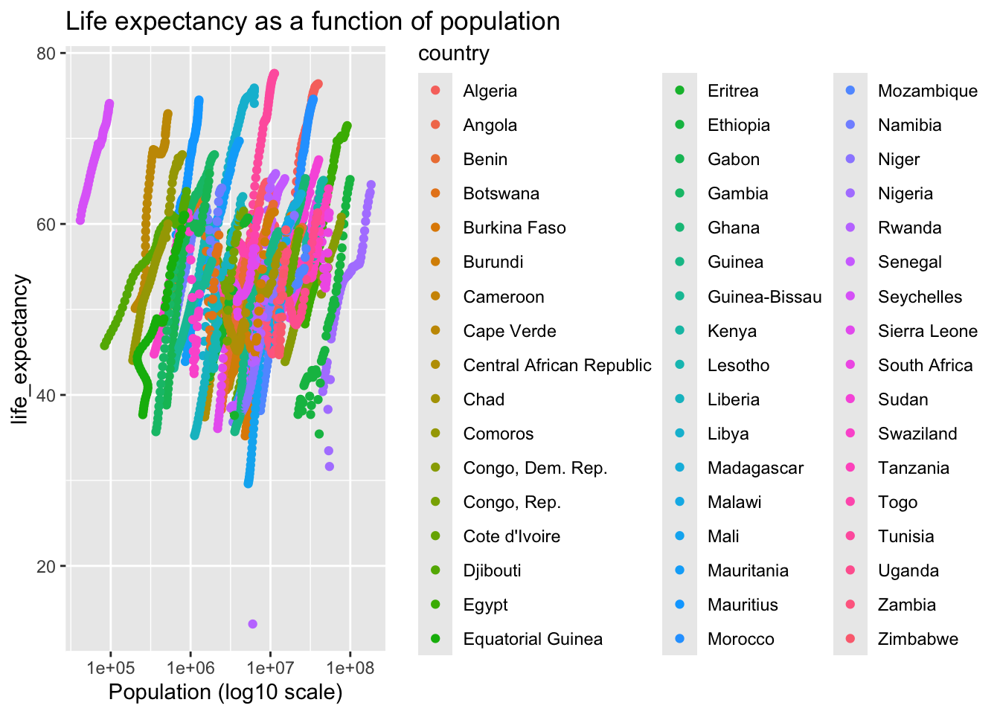
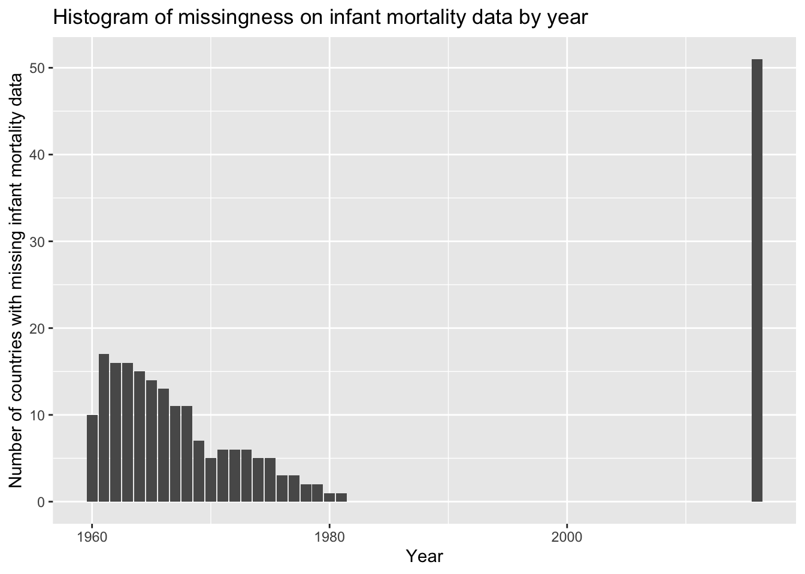
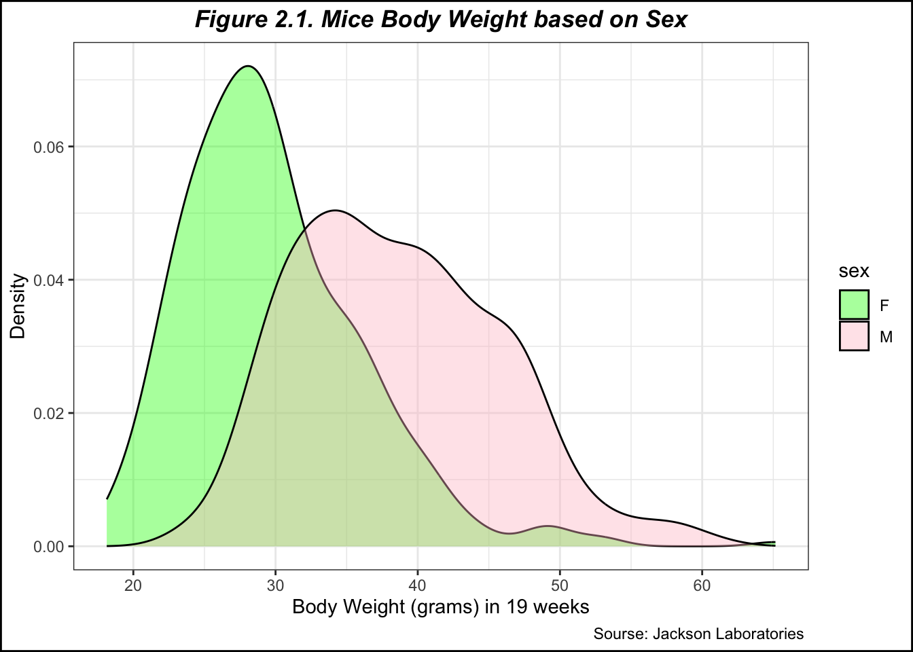
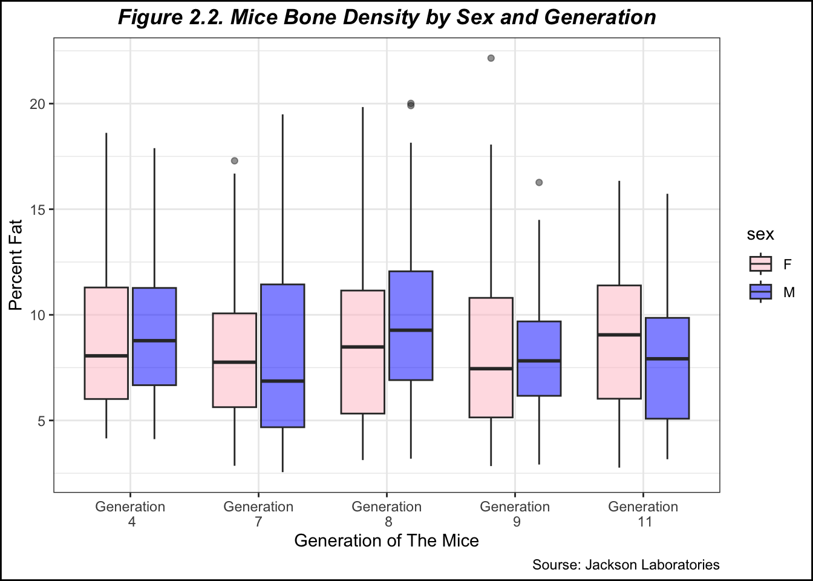
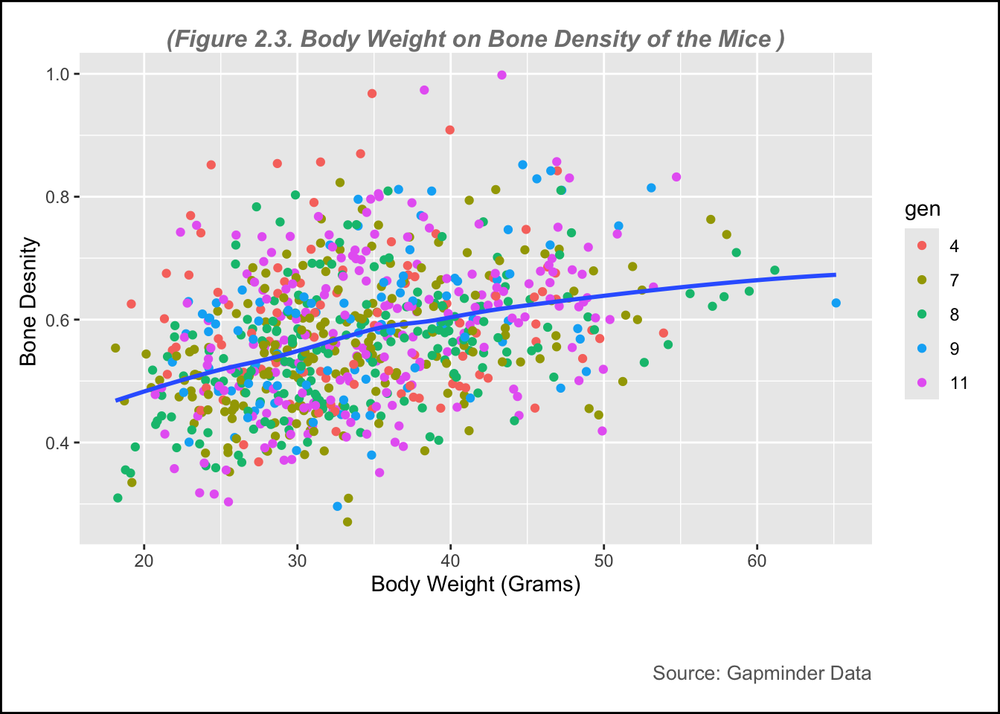

Reviewing the help file, structure, summary, and object type of the Gapminder data
#Produce help file for Gapminder datahelp(gapminder)#Look at structure and summary of Gapminder datastr(gapminder)
'data.frame': 10545 obs. of 9 variables:
$ country : Factor w/ 185 levels "Albania","Algeria",..: 1 2 3 4 5 6 7 8 9 10 ...
$ year : int 1960 1960 1960 1960 1960 1960 1960 1960 1960 1960 ...
$ infant_mortality: num 115.4 148.2 208 NA 59.9 ...
$ life_expectancy : num 62.9 47.5 36 63 65.4 ...
$ fertility : num 6.19 7.65 7.32 4.43 3.11 4.55 4.82 3.45 2.7 5.57 ...
$ population : num 1636054 11124892 5270844 54681 20619075 ...
$ gdp : num NA 1.38e+10 NA NA 1.08e+11 ...
$ continent : Factor w/ 5 levels "Africa","Americas",..: 4 1 1 2 2 3 2 5 4 3 ...
$ region : Factor w/ 22 levels "Australia and New Zealand",..: 19 11 10 2 15 21 2 1 22 21 ...
summary(gapminder)
country year infant_mortality life_expectancy
Albania : 57 Min. :1960 Min. : 1.50 Min. :13.20
Algeria : 57 1st Qu.:1974 1st Qu.: 16.00 1st Qu.:57.50
Angola : 57 Median :1988 Median : 41.50 Median :67.54
Antigua and Barbuda: 57 Mean :1988 Mean : 55.31 Mean :64.81
Argentina : 57 3rd Qu.:2002 3rd Qu.: 85.10 3rd Qu.:73.00
Armenia : 57 Max. :2016 Max. :276.90 Max. :83.90
(Other) :10203 NA's :1453
fertility population gdp continent
Min. :0.840 Min. :3.124e+04 Min. :4.040e+07 Africa :2907
1st Qu.:2.200 1st Qu.:1.333e+06 1st Qu.:1.846e+09 Americas:2052
Median :3.750 Median :5.009e+06 Median :7.794e+09 Asia :2679
Mean :4.084 Mean :2.701e+07 Mean :1.480e+11 Europe :2223
3rd Qu.:6.000 3rd Qu.:1.523e+07 3rd Qu.:5.540e+10 Oceania : 684
Max. :9.220 Max. :1.376e+09 Max. :1.174e+13
NA's :187 NA's :185 NA's :2972
region
Western Asia :1026
Eastern Africa : 912
Western Africa : 912
Caribbean : 741
South America : 684
Southern Europe: 684
(Other) :5586
#Determining the object type of the dataclass(gapminder)
[1] "data.frame"
Step 3: Creating dataset restricted to African countries
#Restricting data to African countries#Checking what continents are included in the datasettable(gapminder$continent)
Africa Americas Asia Europe Oceania
2907 2052 2679 2223 684
#Restricting to rows where continent is Africaafricadata <- gapminder %>%filter(continent =='Africa')#Checking structure and summary of Africa datasetstr(africadata)
'data.frame': 2907 obs. of 9 variables:
$ country : Factor w/ 185 levels "Albania","Algeria",..: 2 3 18 22 26 27 29 31 32 33 ...
$ year : int 1960 1960 1960 1960 1960 1960 1960 1960 1960 1960 ...
$ infant_mortality: num 148 208 187 116 161 ...
$ life_expectancy : num 47.5 36 38.3 50.3 35.2 ...
$ fertility : num 7.65 7.32 6.28 6.62 6.29 6.95 5.65 6.89 5.84 6.25 ...
$ population : num 11124892 5270844 2431620 524029 4829291 ...
$ gdp : num 1.38e+10 NA 6.22e+08 1.24e+08 5.97e+08 ...
$ continent : Factor w/ 5 levels "Africa","Americas",..: 1 1 1 1 1 1 1 1 1 1 ...
$ region : Factor w/ 22 levels "Australia and New Zealand",..: 11 10 20 17 20 5 10 20 10 10 ...
summary(africadata)
country year infant_mortality life_expectancy
Algeria : 57 Min. :1960 Min. : 11.40 Min. :13.20
Angola : 57 1st Qu.:1974 1st Qu.: 62.20 1st Qu.:48.23
Benin : 57 Median :1988 Median : 93.40 Median :53.98
Botswana : 57 Mean :1988 Mean : 95.12 Mean :54.38
Burkina Faso: 57 3rd Qu.:2002 3rd Qu.:124.70 3rd Qu.:60.10
Burundi : 57 Max. :2016 Max. :237.40 Max. :77.60
(Other) :2565 NA's :226
fertility population gdp continent
Min. :1.500 Min. : 41538 Min. :4.659e+07 Africa :2907
1st Qu.:5.160 1st Qu.: 1605232 1st Qu.:8.373e+08 Americas: 0
Median :6.160 Median : 5570982 Median :2.448e+09 Asia : 0
Mean :5.851 Mean : 12235961 Mean :9.346e+09 Europe : 0
3rd Qu.:6.860 3rd Qu.: 13888152 3rd Qu.:6.552e+09 Oceania : 0
Max. :8.450 Max. :182201962 Max. :1.935e+11
NA's :51 NA's :51 NA's :637
region
Eastern Africa :912
Western Africa :912
Middle Africa :456
Northern Africa :342
Southern Africa :285
Australia and New Zealand: 0
(Other) : 0
Step 4: Creating two objects based on African data
obj1 contains ‘infant_mortality’ and ‘life_expectancy’ obj2 contains ‘population’ and ‘life_expectancy’
#Creating object 1 with 'infant_mortality' and 'life_expectancy'obj1 <- africadata %>%select(c(infant_mortality, life_expectancy))#checking summary and structure of obj1str(obj1)
'data.frame': 2907 obs. of 2 variables:
$ infant_mortality: num 148 208 187 116 161 ...
$ life_expectancy : num 47.5 36 38.3 50.3 35.2 ...
summary(obj1)
infant_mortality life_expectancy
Min. : 11.40 Min. :13.20
1st Qu.: 62.20 1st Qu.:48.23
Median : 93.40 Median :53.98
Mean : 95.12 Mean :54.38
3rd Qu.:124.70 3rd Qu.:60.10
Max. :237.40 Max. :77.60
NA's :226
#Creating object 2 with 'population' and 'life_expectancy'obj2 <- africadata %>%select(c(population, life_expectancy))#checking summary and structure of obj2str(obj2)
'data.frame': 2907 obs. of 2 variables:
$ population : num 11124892 5270844 2431620 524029 4829291 ...
$ life_expectancy: num 47.5 36 38.3 50.3 35.2 ...
summary(obj2)
population life_expectancy
Min. : 41538 Min. :13.20
1st Qu.: 1605232 1st Qu.:48.23
Median : 5570982 Median :53.98
Mean : 12235961 Mean :54.38
3rd Qu.: 13888152 3rd Qu.:60.10
Max. :182201962 Max. :77.60
NA's :51
Step 5: Initial plotting
Two initial relationships with life expectancy were explored, the relationship with infant mortality and population size. These are modeled in the scatterplots below.
#Plotting life expectancy as a function of infant mortalityggplot(data=obj1, aes(x = infant_mortality, y = life_expectancy)) +geom_point() +labs(title ="Life expectancy as a function of infant mortality")
Warning: Removed 226 rows containing missing values or values outside the scale range
(`geom_point()`).

#Plotting life expectancy as a function of populationggplot(data=obj2, aes(x = population, y = life_expectancy)) +geom_point() +scale_x_continuous(trans='log10') +labs(title ="Life expectancy as a function of population", x ="Population (log10 scale)")
Warning: Removed 51 rows containing missing values or values outside the scale range
(`geom_point()`).

In the plots above, many points seemed to follow distinct lines. I had a hunch that these were representing country specific trajectories, so I rerun the graphs using color to represent country.
#Checking effect of country on plots above by rerunning the graphs using color to represent country.#Plotting life expectancy as a function of infant mortalityggplot(data=africadata, aes(x = infant_mortality, y = life_expectancy)) +geom_point(aes(color = country)) +labs(title ="Life expectancy as a function of infant mortality")
Warning: Removed 226 rows containing missing values or values outside the scale range
(`geom_point()`).

#Plotting life expectancy as a function of populationggplot(data=africadata, aes(x = population, y = life_expectancy)) +geom_point(aes(color = country)) +scale_x_continuous(trans='log10') +labs(title ="Life expectancy as a function of population", x ="Population (log10 scale)")
Warning: Removed 51 rows containing missing values or values outside the scale range
(`geom_point()`).

Both graphs, but particularly the graph of life expectancy as a function of population confirmed this. The observed “streaks” are independent countries’ life expectancy trajectories.
Step 6: More data processing - selecting year with most complete data
To determine the level of missingness in infant mortality by year, I looked at both how the missingness was distributed by year and determined the years with the least amount of missingness (i.e., most complete data)
#To determine the number of infant mortality data points by year, I filtered the africadata to restrict to only rows with missing infant mortality, grouped by year, and counted the number of rows in each year using n() within the summarize statementincomp_year <- africadata %>%filter(is.na(infant_mortality)) %>%group_by(year) %>%summarize(n =n()) incomp_year
#Plot of missingness in infant mortality by yearggplot(incomp_year, aes(x=year, y=n)) +geom_col() +labs(x="Year", y="Number of countries with missing infant mortality data", title="Histogram of missingness on infant mortality data by year")

#I also wanted to print the number of years with the most data. This follows the same process as above, but I restrict to rows with infant mortality data (i.e., where the value is not NA). And, I restrict the final dataset to years with the most rows of infant mortality datacomp_year <- africadata %>%filter(!is.na(infant_mortality)) %>%group_by(year) %>%summarize(n =n()) %>%filter(n ==max(n))comp_year
Years 1960-1981 and 2016 all have missing infant mortlity data for at least one country. Data is most complete for years 1982-2015. Year 2000 was selected for use in the remaining exercises due to its completeness.
#Restricting africadata to only data from the year 2000yr2000 <- africadata %>%filter(year==2000)#Checking structure and summary of yr2000 datasetstr(yr2000)
'data.frame': 51 obs. of 9 variables:
$ country : Factor w/ 185 levels "Albania","Algeria",..: 2 3 18 22 26 27 29 31 32 33 ...
$ year : int 2000 2000 2000 2000 2000 2000 2000 2000 2000 2000 ...
$ infant_mortality: num 33.9 128.3 89.3 52.4 96.2 ...
$ life_expectancy : num 73.3 52.3 57.2 47.6 52.6 46.7 54.3 68.4 45.3 51.5 ...
$ fertility : num 2.51 6.84 5.98 3.41 6.59 7.06 5.62 3.7 5.45 7.35 ...
$ population : num 31183658 15058638 6949366 1736579 11607944 ...
$ gdp : num 5.48e+10 9.13e+09 2.25e+09 5.63e+09 2.61e+09 ...
$ continent : Factor w/ 5 levels "Africa","Americas",..: 1 1 1 1 1 1 1 1 1 1 ...
$ region : Factor w/ 22 levels "Australia and New Zealand",..: 11 10 20 17 20 5 10 20 10 10 ...
summary(yr2000)
country year infant_mortality life_expectancy
Algeria : 1 Min. :2000 Min. : 12.30 Min. :37.60
Angola : 1 1st Qu.:2000 1st Qu.: 60.80 1st Qu.:51.75
Benin : 1 Median :2000 Median : 80.30 Median :54.30
Botswana : 1 Mean :2000 Mean : 78.93 Mean :56.36
Burkina Faso: 1 3rd Qu.:2000 3rd Qu.:103.30 3rd Qu.:60.00
Burundi : 1 Max. :2000 Max. :143.30 Max. :75.00
(Other) :45
fertility population gdp continent
Min. :1.990 Min. : 81154 Min. :2.019e+08 Africa :51
1st Qu.:4.150 1st Qu.: 2304687 1st Qu.:1.274e+09 Americas: 0
Median :5.550 Median : 8799165 Median :3.238e+09 Asia : 0
Mean :5.156 Mean : 15659800 Mean :1.155e+10 Europe : 0
3rd Qu.:5.960 3rd Qu.: 17391242 3rd Qu.:8.654e+09 Oceania : 0
Max. :7.730 Max. :122876723 Max. :1.329e+11
region
Eastern Africa :16
Western Africa :16
Middle Africa : 8
Northern Africa : 6
Southern Africa : 5
Australia and New Zealand: 0
(Other) : 0
Step 7: Plots for year 2000
I reanalyzed the relationships described in Step 5 (relationships between life expectancy and infant mortality and population size) restricteed ot data from the year 2000.
#Plotting life expectancy as a function of infant mortalityggplot(data=yr2000, aes(x = infant_mortality, y = life_expectancy)) +geom_point() +labs(title ="Life expectancy as a function of infant mortality in 2000")
#Plotting life expectancy as a function of populationggplot(data=yr2000, aes(x = population, y = life_expectancy)) +geom_point() +scale_x_continuous(trans='log10') +labs(title ="Life expectancy as a function of population in 2000", x ="Population (log10 scale)")
The negative association between life expectancy and infant mortality persisted, but there no longer appears to be a relationship between life expectancy and population size. This will be explored statistically in the next Step.
Step 8: Simple models to assess relationships between life expectancy and both infant mortality and population size
Simple linear regression was used to fit 2 models, one for each predictor (infant mortality and population size), modeling their effect on life expectancy.
#Fitting first linear model with infant_mortality as a predictor of life expectancyfit1 <-lm(life_expectancy ~ infant_mortality, data = yr2000)#Getting model resultssummary(fit1)
Call:
lm(formula = life_expectancy ~ infant_mortality, data = yr2000)
Residuals:
Min 1Q Median 3Q Max
-22.6651 -3.7087 0.9914 4.0408 8.6817
Coefficients:
Estimate Std. Error t value Pr(>|t|)
(Intercept) 71.29331 2.42611 29.386 < 2e-16 ***
infant_mortality -0.18916 0.02869 -6.594 2.83e-08 ***
---
Signif. codes: 0 '***' 0.001 '**' 0.01 '*' 0.05 '.' 0.1 ' ' 1
Residual standard error: 6.221 on 49 degrees of freedom
Multiple R-squared: 0.4701, Adjusted R-squared: 0.4593
F-statistic: 43.48 on 1 and 49 DF, p-value: 2.826e-08
Infant mortality was significantly, negatively associated with life expectancy (P<0.001).
#Fitting second linear model with population as a predictor of life expectancyfit2 <-lm(life_expectancy ~ population, data = yr2000)#Getting model resultssummary(fit2)
Call:
lm(formula = life_expectancy ~ population, data = yr2000)
Residuals:
Min 1Q Median 3Q Max
-18.429 -4.602 -2.568 3.800 18.802
Coefficients:
Estimate Std. Error t value Pr(>|t|)
(Intercept) 5.593e+01 1.468e+00 38.097 <2e-16 ***
population 2.756e-08 5.459e-08 0.505 0.616
---
Signif. codes: 0 '***' 0.001 '**' 0.01 '*' 0.05 '.' 0.1 ' ' 1
Residual standard error: 8.524 on 49 degrees of freedom
Multiple R-squared: 0.005176, Adjusted R-squared: -0.01513
F-statistic: 0.2549 on 1 and 49 DF, p-value: 0.6159
Population was not significantly associated with life expectancy (P=0.616).
Part 2
Contributors
Muhammad Nasir contibutes in this part
Step 2.1. Overview of the data
library(dslabs)help("mice_weights")#Look at structure and summary of Mice_weights data str(mice_weights)
body_weight bone_density percent_fat sex diet gen
Min. :18.13 Min. :0.2708 Min. : 2.552 F:398 chow:394 4 : 97
1st Qu.:28.09 1st Qu.:0.4888 1st Qu.: 5.566 M:382 hf :386 7 :195
Median :32.98 Median :0.5643 Median : 8.276 8 :193
Mean :34.08 Mean :0.5697 Mean : 8.594 9 : 97
3rd Qu.:39.37 3rd Qu.:0.6373 3rd Qu.:10.926 11:198
Max. :65.15 Max. :0.9980 Max. :22.154
NA's :4 NA's :4
litter
1:442
2:338
#Determining the object type of the dataclass(mice_weights)
[1] "data.frame"
In this project, I use dataset “mice_weights” from dslabs packages. This data contains Body weights, bone density, and percent fat for mice under two diets: chow and high fat. Data provided by Karen Svenson from Jackson Laboratories. Funding to generate these data came from NIH grant P50 GM070683 awarded to Gary Churchill.
There are 7 variables and 780 observations in this data.Variables include body_weight, bone_density, percent_fat, sex, diet, gen, and litter:
Details - body_weight. Body weight in grams at 19 weeks. - bone_density. Body density. - percent_fat. Percent fat. - sex. The sex of the mice. - diet. The diet of the mice: chow or high fat. - gen. These are outbread mice. This variable denotes the generation. - litter. Which of two litters mice belong to.
Step 2.2. Creating object/ dataset from mice_weights
Now, I am going to create object from the data for further actions (data cleaning and data analysis)
mice <- mice_weights head(mice) # check the data
body_weight bone_density percent_fat sex diet gen litter
1 27.60 0.6163850 7.255468 F chow 4 1
2 23.03 0.7693496 4.951037 F chow 4 1
3 28.72 0.6842564 6.020849 F chow 4 1
4 32.57 0.6436947 9.536251 F chow 4 1
5 28.61 0.5297713 6.987331 F chow 4 1
6 28.16 0.5649217 6.767774 F chow 4 1
In this part, I do data cleaning, elleminating missing values, and creating new variables
mice<-na.omit(mice)summary(mice)
body_weight bone_density percent_fat sex diet gen
Min. :18.13 Min. :0.2708 Min. : 2.552 F:397 chow:394 4 : 97
1st Qu.:28.05 1st Qu.:0.4888 1st Qu.: 5.566 M:379 hf :382 7 :193
Median :32.95 Median :0.5643 Median : 8.276 8 :192
Mean :34.05 Mean :0.5697 Mean : 8.594 9 : 97
3rd Qu.:39.37 3rd Qu.:0.6373 3rd Qu.:10.926 11:197
Max. :65.15 Max. :0.9980 Max. :22.154
litter
1:441
2:335
plot2_1 <- mice %>%ggplot(aes(body_weight, fill = sex)) +geom_density(alpha=0.4)+# to set the tranparant of the color scale_fill_manual( values =c("F"="green", "M"="pink"))+# to set the color of the areatheme_bw()+# to create minimalistic style, it changes default plot into white. ggtitle("Figure 2.1. Mice Body Weight based on Sex") +theme(plot.title =element_text(hjust =0.5, face ="bold.italic"))+xlab("Body Weight (grams) in 19 weeks")+ylab("Density") +labs(caption ="Sourse: Jackson Laboratories ") +theme(plot.background =element_rect(color ="black", fill =NA, linewidth =1)) # to create frame of the plot. plot2_1

figure_file =here("images","Figure 2.1. Mice Body Waight Based on sex.png") # to set up location for the pictures created ggsave(filename = figure_file, plot=plot2_1) # save the pictures created
Saving 7 x 5 in image
Figure 2.1. shows the distribution of body weight of Mice in grams in 19 weeks. It can be seen that Male mice overall had higher body weight compared to female.
plot2_2 <- mice %>%ggplot(aes( x= gen, y=percent_fat, fill = sex)) +geom_boxplot(alpha =0.5)+theme_bw()+# to make the backround minimalistic and convert into white instead of grids scale_fill_manual(values =c("M"="blue", "F"="pink")) +# Set fill colorscale_color_manual(values =c("M"="darkblue", "F"="darkred")) +# Set border colorscale_x_discrete(breaks =c(4, 7, 8, 9, 11), # this is to specify the generationlabels=c("Generation\n 4", "Generation\n 7 ", "Generation\n 8", "Generation\n 9", "Generation\n 11"))+# this is to give lable for the generationscale_y_continuous()+labs(title ="Figure 2.2. Mice Bone Density by Sex and Generation", # create the titlex ="Generation of The Mice",y ="Percent Fat", caption ="Sourse: Jackson Laboratories")+theme(plot.title =element_text(hjust =0.5, face ="bold.italic")) +# to adjust the title position, size, and colortheme(plot.background =element_rect(color ="black", fill =NA, linewidth =1)) # to create frame of the plot plot2_2
Warning: No shared levels found between `names(values)` of the manual scale and the
data's colour values.

figure_file =here("images","Figure 2.2. Mice Bone Density by Generation and Sex.png") # to set up location for the pictures created ggsave(filename = figure_file, plot=plot2_2) # save the pictures created
Saving 7 x 5 in image
Warning: No shared levels found between `names(values)` of the manual scale and the
data's colour values.
From figure 2.2. we can see the percentage of fat of mice based on generation and sex. There are different average percent of fat between male and female mice across generation.
Next, I am going to create plot the effect of body fat on bone density.
plot2_3 <-ggplot(data = mice, aes(x= body_weight, y= bone_density))+geom_point(aes(color = gen)) +geom_smooth(method ="loess", se =FALSE)+labs(subtitle ="(Figure 2.3. Body Weight on Bone Density of the Mice )", y ="Bone Desnity ",x ="Body Weight (Grams)",caption ="Source: Gapminder Data" ) +# to create the name of each axistheme(plot.background =element_rect(color ="black", size =1), # Border around the entire plot (including title)plot.subtitle =element_text(hjust =0.5, vjust =-1, size =12, color ="gray50", face ="bold.italic"), # to adjust the subtitle position, color and size (note, set vjust=185 for printed pictures, for website, set at 100 )plot.caption =element_text(hjust =1, vjust =-13, size =10, color ="gray40"), # to adjust the subtitle position, color and size, hjust=horizontal and vjust= vertical plot.margin =margin(10, 10, 45, 10)) # (top, right, bottom, left) Increase the bottom margin to create space for the subtitle below the x-axis
Warning: The `size` argument of `element_rect()` is deprecated as of ggplot2 3.4.0.
ℹ Please use the `linewidth` argument instead.
print(plot2_3)
`geom_smooth()` using formula = 'y ~ x'

figure_file =here("images","Figure 2.3. Body Weight on Bone Density of the Mice.png") # to set up location for the pictures created ggsave(filename = figure_file, plot=plot2_3) # save the pictures created
Saving 7 x 5 in image
`geom_smooth()` using formula = 'y ~ x'
I want to create plot for bone density by diet
table2_1 <- mice %>%group_by(gen) %>%# Group data by generationsummarise(avg_body_weight =mean(body_weight, na.rm =TRUE), # Calculate average body weightavg_bone_density =mean(bone_density, na.rm =TRUE), # Calculate average bone densityavg_percent_fat =mean(percent_fat, na.rm =TRUE) # Calculate average percent fat ) %>%rename(Generation= gen, 'Average Body Weigth'= avg_body_weight,'Average Bone Density'= avg_bone_density,'Average Percent Fat'= avg_percent_fat )table2_1%>%kable("html", caption ="Table 2.1. Summary Table of Mice Data by Generation") %>%kable_styling(bootstrap_options =c("striped", "hover", "condensed"), full_width = F, position ="center") %>%column_spec(1, bold =TRUE, color ="white", background ="darkblue") %>%# Style gen columncolumn_spec(2, background ="lightblue") %>%# Style avg_body_weight columncolumn_spec(3, background ="lightgreen") %>%# Style avg_bone_density columncolumn_spec(4, background ="lightyellow") %>%# Style avg_percent_fat columnrow_spec(0, bold =TRUE, color ="white", background ="gray") # Bold header row
Table 2.1. Summary Table of Mice Data by Generation
First, I want to perform simple linear model with body weight as a predictor of bone density of mice in the study
model_1 <-lm(bone_density ~ body_weight, data = mice)summary(model_1)
Call:
lm(formula = bone_density ~ body_weight, data = mice)
Residuals:
Min 1Q Median 3Q Max
-0.29503 -0.07194 -0.00949 0.06087 0.39403
Coefficients:
Estimate Std. Error t value Pr(>|t|)
(Intercept) 0.3983009 0.0162684 24.48 <2e-16 ***
body_weight 0.0050344 0.0004649 10.83 <2e-16 ***
---
Signif. codes: 0 '***' 0.001 '**' 0.01 '*' 0.05 '.' 0.1 ' ' 1
Residual standard error: 0.1046 on 774 degrees of freedom
Multiple R-squared: 0.1316, Adjusted R-squared: 0.1305
F-statistic: 117.3 on 1 and 774 DF, p-value: < 2.2e-16
From the model, the intercept is 0.398, meaning that the average bone density of mice is 0.398 when the body weight is zero. However, in the real world, it is not possible that mice had 0 gram body weight. The slop tells us the average increase of bone density for every gram in the increase of body weight. There is statistically significant relationship between body weight and bone density with p<0.0001.
I want to perform Analysis of Variance (ANOVA) to look at the average difference of percent fat for based on diet and generation.
model_2 <-lm(percent_fat ~ diet + gen + diet*gen, data = mice)summary(model_2)
Analysis of Variance Table
Response: percent_fat
Df Sum Sq Mean Sq F value Pr(>F)
diet 1 2926.5 2926.50 309.3635 <2e-16 ***
gen 4 154.4 38.60 4.0800 0.0028 **
diet:gen 4 20.7 5.17 0.5469 0.7014
Residuals 766 7246.2 9.46
---
Signif. codes: 0 '***' 0.001 '**' 0.01 '*' 0.05 '.' 0.1 ' ' 1
Conclusion: 1. There is a statistically significant difference in the mean of percent fat between the different diet group with p<0.0001. 2. There is a statistically significant difference in the mean of percent fat among the different generation with p<0.0028. 3. There is no significant interaction between diet and generation.